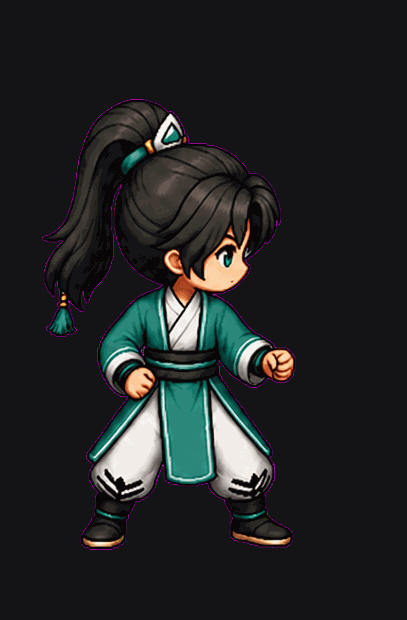
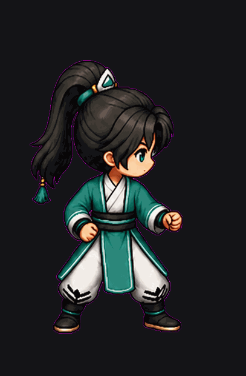
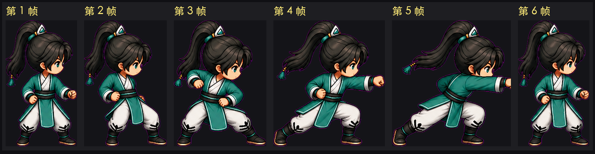
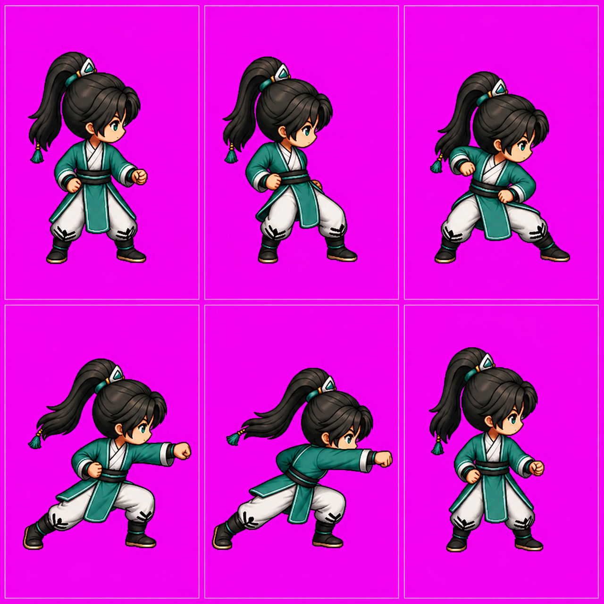

攻击动作条 · 试产（sprite-gen 方法 + mxai gpt-image-2）
身份锚 = 线上主角 2D idle（右向） · 一次生成 6 格动作条 · 成本 2 积分 · 帧率 8fps
① 对齐后（foot-centroid 对齐）

脚部质心极差 0.8px、底线 0px
② 抠底原始（未对齐）

看得到人物在格子里会左右漂
③ 六帧逐帧（对齐后）

起手 → 转体 → 蹲身蓄力 → 弓步出拳 → 拳到最远 → 收势
④ 模型原始输出（未抠底）

品红底是色键；实测生成器把它画成了
(243,4,240)
而不是纯 #FF00FF